Storia della metrologia
Una storia di scienza, società e potere.
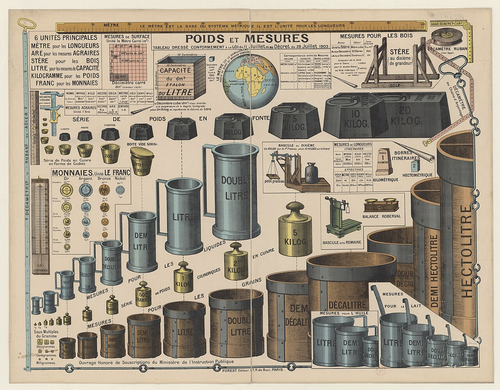
La storia della civiltà umana è anche la storia della misura, attraverso cui l'uomo ha imparato a descrivere e confrontare quantitativamente il mondo che lo circonda. Molto prima della nascita della scienza moderna e della scrittura, gli esseri umani avevano già sviluppato forme elementari di confronto e quantificazione necessarie alla vita quotidiana.
Tuttavia, senza la possibilità di effettuare misure affidabili, sarebbe stato molto più difficile costruire ponti, tracciare strade, innalzare templi, progettare acquedotti o organizzare gli scambi commerciali tra popoli diversi. Ogni civiltà, dalle più antiche fino ai giorni nostri, ha dovuto affrontare problemi simili: come stabilire con precisione l'estensione di un terreno, quanto dovesse essere grande una casa o quanta acqua servisse per irrigare un campo? E ancora: quale quantità di grano doveva essere consegnata come tributo o scambiata al mercato?
In tutti questi casi era necessario confrontare una grandezza con un riferimento comune. Da questa esigenza si svilupparono progressivamente sistemi di misura e, con essi, unità sempre più definite e condivise. Ma per arrivare ai moderni sistemi di misura sarebbero dovuti passare molti secoli.
Capitolo 1
Misurare è un'attività intellettuale tutt'altro che semplice. Significa astrarre, tra le molte caratteristiche di un oggetto, quella che si vuole misurare e confrontare oggetti qualitativamente diversi sulla base di quella sola grandezza.
Per esempio un passo, un tratto di strada, un pezzo di tessuto e l'altezza di un albero sono oggetti completamente diversi; eppure, se scegliamo la lunghezza come grandezza da considerare, possiamo metterli in relazione tra loro, confrontarli e stabilire quale sia maggiore o minore. È questa capacità di astrarre una proprietà e di esprimerla quantitativamente che rende possibile la misura.
In questa prospettiva, la storia della misura è anche la storia di come l'uomo abbia progressivamente imparato a separare la grandezza dall'oggetto che la possiede, cercando di definirla e confrontarla in modo sempre più stabile, riproducibile e universale.
Capitolo 2
Per misurare il mondo che lo circonda, l'uomo ricorre a ciò che ha di più immediatamente disponibile: il proprio corpo. Il piede, il palmo, il dito, il braccio e il passo erano riferimenti immediati, sempre disponibili e facilmente riconoscibili. Con essi era possibile confrontare la lunghezza di un oggetto, l'estensione di un terreno o la distanza tra due luoghi. Queste prime misure erano profondamente legate all'esperienza quotidiana. Il corpo diventava così il primo strumento attraverso cui l'uomo cercava di dare ordine quantitativo allo spazio che lo circondava.
Ma proprio la loro origine ne rivelava anche il limite. Il piede di una persona non era necessariamente uguale a quello di un'altra, così come un passo poteva variare da individuo a individuo. E quando comunità diverse utilizzavano riferimenti differenti, confrontare le loro misure diventava difficile. La necessità di misurare non era quindi sufficiente: occorreva anche fare in modo che una misura potesse essere riconosciuta e utilizzata da più persone. Con il tempo, le diverse unità cominciarono a essere organizzate in sistemi nei quali i loro rapporti fossero definiti e le grandezze potessero essere confrontate e trasformate più facilmente. Il corpo rimaneva il punto di partenza, ma la misura cominciava lentamente a diventare qualcosa di più: non soltanto un riferimento concreto, ma un sistema condiviso di relazioni.
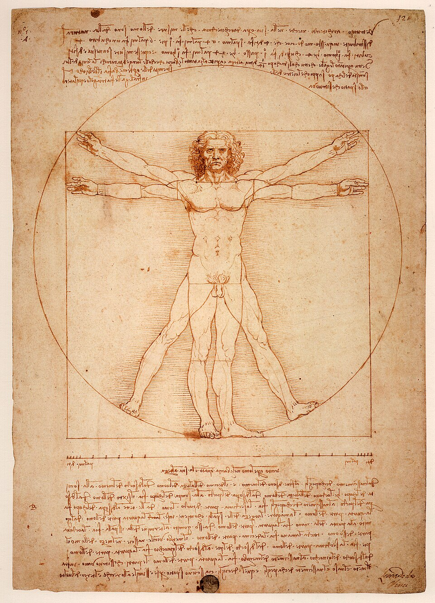
L'Uomo Vitruviano di Leonardo da Vinci rappresenta uno dei simboli più celebri della cultura rinascimentale. Il disegno studia le proporzioni del corpo umano attraverso la geometria, riprendendo le indicazioni dell'architetto romano Vitruvio. Il corpo diventa così un riferimento per descrivere e confrontare dimensioni e rapporti geometrici: una rappresentazione particolarmente significativa per la storia della misura e per il modo in cui, nella cultura rinascimentale, il corpo umano poteva essere assunto come riferimento per descrivere proporzioni e dimensioni.
Capitolo 3
Le misure legate al corpo umano furono per lungo tempo strumenti sufficientemente efficaci per molte esigenze pratiche. Permisero di misurare terreni, costruire abitazioni, progettare imbarcazioni e realizzare manufatti sempre più complessi. La misura divenne progressivamente uno strumento essenziale non soltanto per soddisfare le necessità quotidiane, ma anche per trasformare un'idea in un'opera concreta.
La storia dell'architettura offre numerosi esempi di come lunghezze, rapporti e proporzioni siano diventati parte integrante della progettazione. Le grandi architetture del passato, dalle costruzioni monumentali dell'antichità alle chiese romaniche e gotiche, mostrano quanto la capacità di stabilire e confrontare grandezze fosse importante nel lavoro umano. Ma proprio ciò che rendeva queste misure così immediate ne costituiva anche il limite principale: esse rimanevano legate al corpo umano e alle tradizioni della comunità che le utilizzava. Un piede, un palmo o un passo potevano avere lunghezze diverse da una persona all'altra e, soprattutto, potevano assumere valori differenti da una comunità all'altra.
Il problema non era quindi più soltanto riuscire a misurare, ma fare in modo che una misura avesse lo stesso significato per persone diverse e potesse essere riconosciuta e utilizzata all'interno di una comunità. La misura doveva diventare sufficientemente stabile, riconoscibile e condivisa.
Capitolo 4
Ma chi decide quanto vale una misura? Per gran parte della storia, stabilire quanto valeva una misura significava anche definire riferimenti comuni per il commercio, la divisione dei raccolti, la riscossione delle imposte e l'amministrazione delle terre. Chi aveva il diritto di fissare le unità di misura e di controllarne l'uso possedeva, di conseguenza, anche una forma concreta di autorità. In diverse epoche e società, autorità centrali e locali cercarono di controllare le unità, i pesi e i campioni utilizzati nei commerci e nella riscossione dei tributi. Stabilire una misura significava infatti stabilire una regola comune alla quale gli altri dovevano attenersi.
In un mondo caratterizzato dalla presenza di numerose misure locali, la stessa denominazione poteva indicare quantità differenti in luoghi diversi. Una merce poteva quindi essere acquistata, venduta o tassata secondo criteri diversi a seconda del luogo in cui avveniva lo scambio. La misura diventava così una questione di fiducia, ma anche di conflitto e di interesse economico. Il problema era particolarmente importante per chi disponeva di minori possibilità di controllare il risultato della misurazione. Quando il valore di una misura non era condiviso o facilmente verificabile, il rapporto tra chi la stabiliva o la controllava e chi doveva accettarla poteva diventare anche un rapporto di potere.
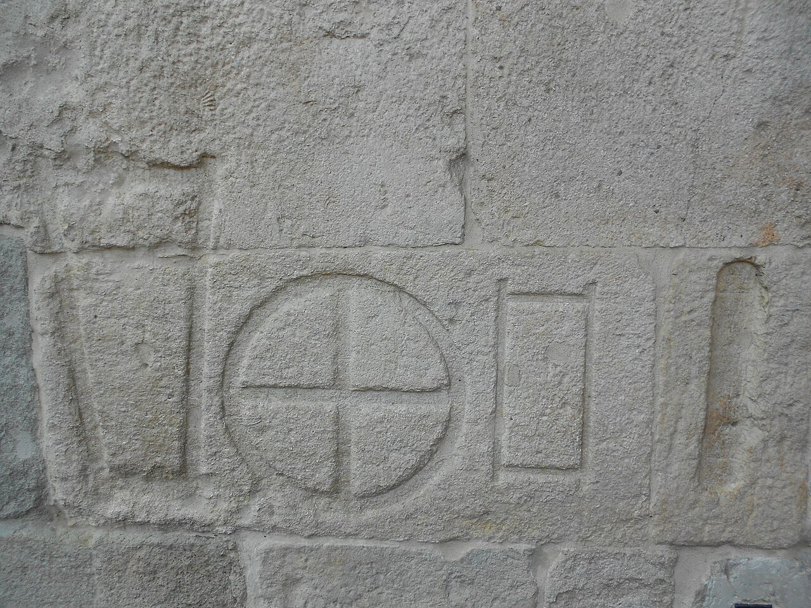
Capitolo 5
Con l'intensificarsi dei commerci e dei viaggi, già a partire dal XVI secolo, popolazioni sempre più lontane entrarono in contatto tra loro. Sorse così un problema nuovo: fare in modo che una misura conservasse lo stesso significato anche al di là dei confini della comunità che la utilizzava. Misurare non era più sufficiente, ma era necessario poter confrontare le misure e riconoscere in esse un riferimento comune.
Questa esigenza spinse, nel corso del tempo, a cercare riferimenti più stabili. Il riferimento cominciò progressivamente a svincolarsi dal corpo umano: in diverse società si costruirono campioni materiali, si stabilirono rapporti tra le diverse unità e si organizzarono le misure all'interno di sistemi sempre più strutturati. Il riferimento non era più soltanto qualcosa che apparteneva all'uomo, ma diventava qualcosa che poteva essere conservato, confrontato e condiviso. La misura cominciava così a liberarsi, almeno in parte, dalla variabilità dell'esperienza individuale.
Capitolo 6
Le misure erano tuttavia ancora profondamente legate all'esperienza quotidiana e alle attività concrete. Per un agricoltore, per esempio, una misura del terreno poteva essere associata alla quantità di lavoro necessaria per coltivarlo o alla quantità di seme necessaria per seminarlo. Una misura completamente astratta da queste caratteristiche poteva quindi apparire meno significativa di quella tradizionale, che la comunità conosceva e utilizzava da generazioni.
L'introduzione di sistemi di misura universali richiese perciò qualcosa di più della semplice sostituzione di un'unità con un'altra, perché implicava una trasformazione del modo stesso di concepire la misura. Si trattava di passare progressivamente da una molteplicità di riferimenti legati ai luoghi, alle attività e alle tradizioni locali verso sistemi nei quali le grandezze potessero essere definite attraverso riferimenti comuni e confrontabili.
Capitolo 7
Perché questa trasformazione potesse compiersi su scala universale sarebbe stato necessario un nuovo clima culturale e politico, quello dell'Illuminismo e, in seguito, della Rivoluzione francese. Nel clima della Rivoluzione, il problema delle misure non era più soltanto quello di trovare unità pratiche, ma assumeva anche un significato politico e culturale più profondo: se gli uomini dovevano essere uguali davanti alla legge, potevano continuare a misurare secondo regole diverse?
La domanda conduceva direttamente a un problema ancora più radicale: se la misura doveva essere uguale per tutti, su che cosa avrebbe dovuto fondarsi? Non più sul corpo di un uomo, né sulla tradizione di una città o sull'autorità di un sovrano. Si delineava così l'idea di un sistema di misura concepito, secondo l'ideale illuministico, come uno strumento comune e universale.
La nascita del Sistema metrico si inserì quindi non soltanto in una riforma tecnica, ma anche in una profonda trasformazione politica, economica e culturale. La ricerca di un linguaggio comune delle misure si inseriva così nella costruzione di una nuova idea di società, nella quale le regole della misurazione potessero essere sottratte alla frammentazione dei privilegi e dei poteri locali.
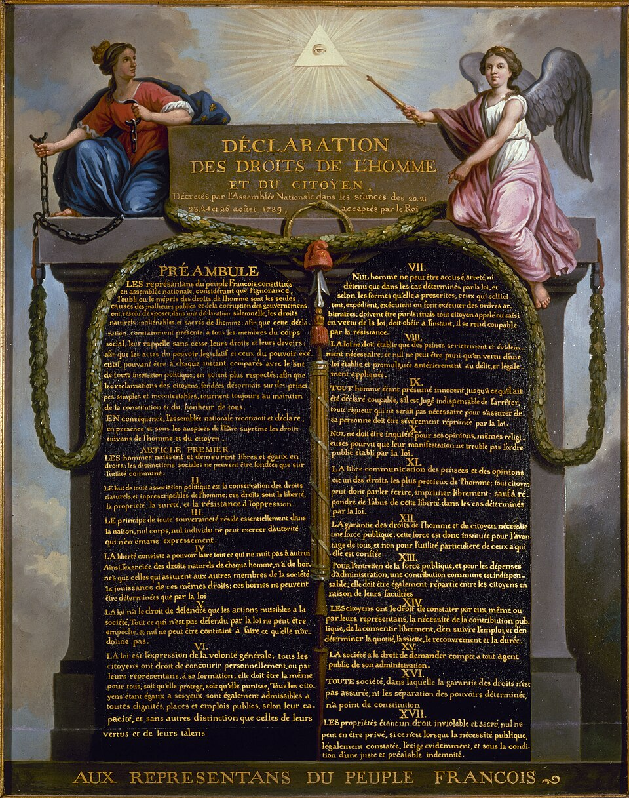
Tra la fine del XVIII secolo e gli anni della Rivoluzione francese prende forma il Sistema metrico decimale, fondato su criteri universali, indipendenti dal corpo umano e dalle tradizioni locali. Il passaggio dalla molteplicità delle misure locali a un sistema universale si compie attraverso alcune tappe fondamentali. Il punto di partenza è la notte del 4 agosto 1789, quando l'Assemblea Nazionale Costituente abolisce i privilegi feudali, creando anche le condizioni politiche per superare la frammentazione dei pesi e delle misure legata ai privilegi locali. Poche settimane dopo, il 26 agosto 1789, viene proclamata la Dichiarazione dei diritti dell'uomo e del cittadino. L'ideale di uguaglianza affermato nella Dichiarazione rendeva sempre più difficile conciliare una società fondata sull'uguaglianza dei cittadini con una realtà nella quale pesi e misure potevano ancora variare da un luogo all'altro. Il progetto comincia quindi a tradursi in decisioni concrete. L'8 maggio 1790 viene approvato il decreto che avvia la creazione di un sistema di misure uniforme e universale, destinato a essere fondato su riferimenti naturali e non sull'arbitrio di un sovrano. Un passaggio decisivo arriva il 1° agosto 1793, quando la Convenzione adotta ufficialmente il sistema metrico decimale.
Capitolo 8
Nel 1790, l'Assemblea Nazionale francese incaricò l'Accademia delle Scienze di elaborare le basi di un nuovo sistema universale di pesi e misure. Si cercava un riferimento che non dipendesse dall'uomo, dalle tradizioni locali o dall'autorità di un sovrano, ma che fosse ricavato dalla natura stessa. La scelta cadde sulla Terra: si propose di definire il metro come la diecimilionesima parte della distanza tra il Polo Nord e l'Equatore, misurata lungo il meridiano di Parigi.
Per determinare con la necessaria precisione la lunghezza del meridiano, era necessario misurare con grande accuratezza un suo tratto e ricostruire geometricamente il resto attraverso una rete di triangoli. Nel 1792 due astronomi francesi, Jean‑Baptiste Delambre e Pierre Méchain, partirono per un'impresa che avrebbe dovuto fornire alla nuova unità di misura il suo fondamento naturale. Il compito era apparentemente semplice: misurare con la massima precisione possibile un tratto del meridiano di Parigi compreso tra Dunkerque, nel nord della Francia, e Barcellona, in Spagna. Da quella misura sarebbe stato possibile ricavare la lunghezza dell'intero quarto di meridiano terrestre e, quindi, il nuovo metro.
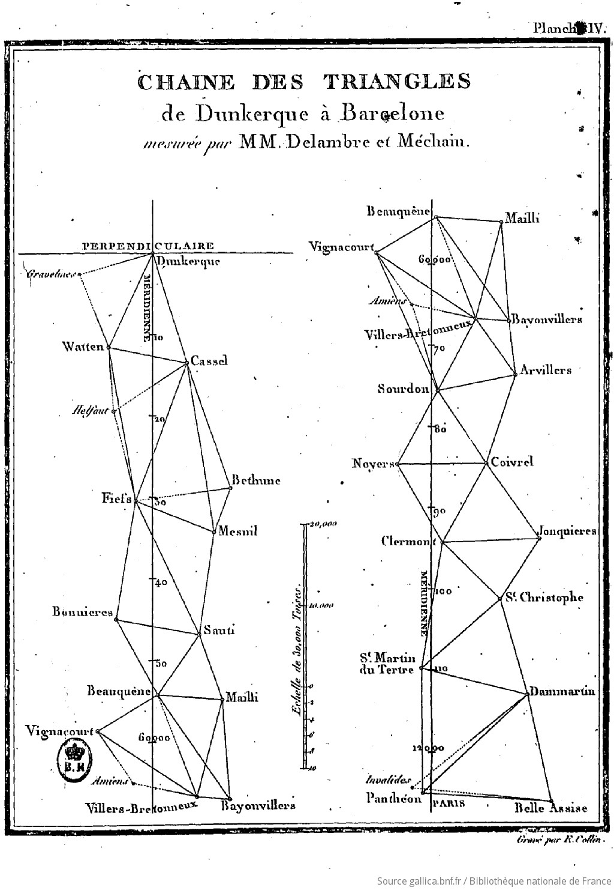
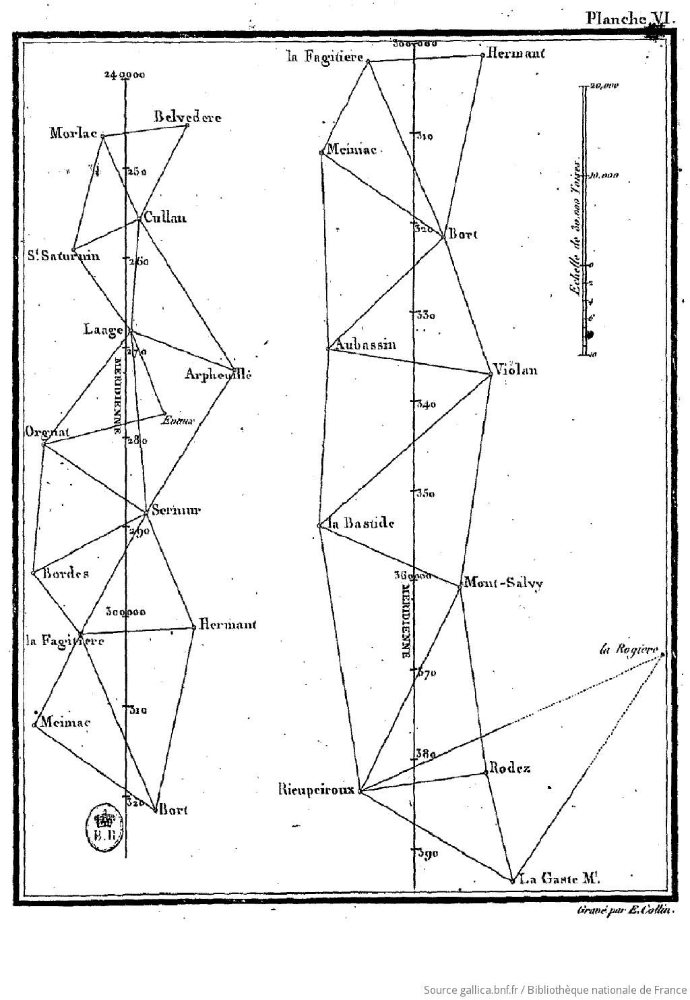
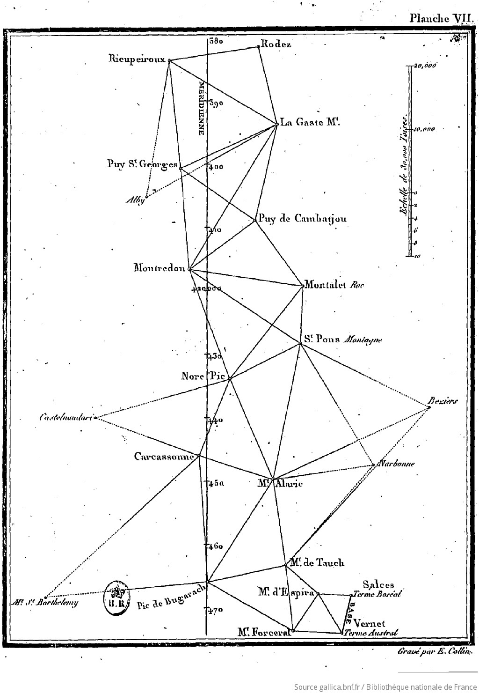
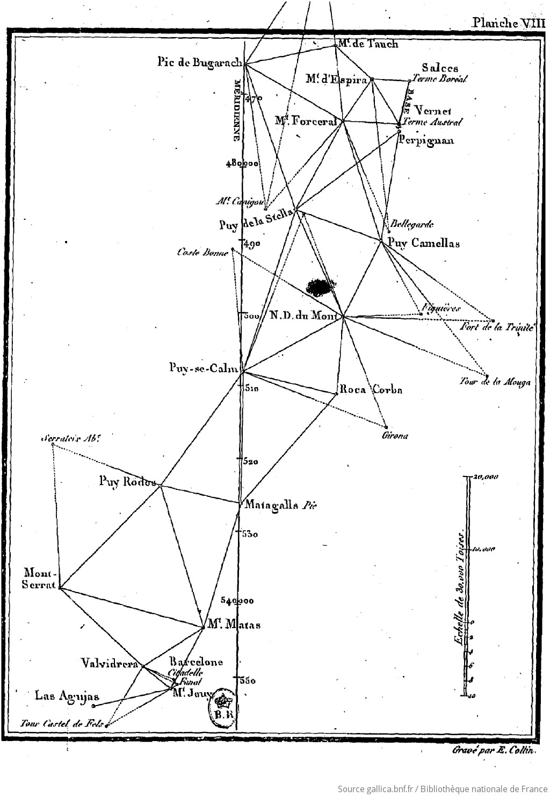
La distanza tra Dunkerque e Barcellona era di centinaia di chilometri. Come si poteva determinarla con la necessaria precisione? La soluzione era affidarsi alla geometria, attraverso un metodo chiamato triangolazione. L'idea è tanto semplice quanto potente: si misurano con grande cura alcune distanze, dette basi, e si utilizzano queste lunghezze per costruire una rete di triangoli. Partendo da una base, si individuano punti elevati e visibili dai suoi estremi; misurando con precisione gli angoli e conoscendo la lunghezza della base, la trigonometria permette di calcolare gli altri lati. Uno dei lati così determinati può diventare a sua volta la base di un nuovo triangolo, e così via: la misura si propaga di triangolo in triangolo, senza mai dover percorrere per intero la distanza da determinare. Per costruire questa rete sul terreno, Delambre e Méchain dovevano individuare campanili, torri, colline e montagne abbastanza elevati da essere visibili gli uni dagli altri anche a grandi distanze, e da quei punti misurare gli angoli con strumenti di precisione. In questo modo l'intero tratto di meridiano tra Dunkerque e Barcellona diventava una gigantesca costruzione geometrica: una lunga catena di triangoli concatenati, dalla quale era possibile ricavare la lunghezza dell'arco di meridiano cercato e, da questa, la lunghezza del metro.
Quello che doveva essere un lavoro relativamente rapido si trasformò in un'impresa durata sette anni.
La Rivoluzione francese sconvolgeva il paese, l'Europa era in guerra e i due astronomi e i loro collaboratori dovevano operare in un clima politico tutt'altro che favorevole agli spostamenti e alle attività scientifiche. L'operazione geodetica era inoltre estremamente complessa e richiedeva osservazioni ripetute e calcoli accurati. L'impresa, iniziata nell'estate del 1792, si concluse soltanto alla fine del 1798.
Quando finalmente i risultati delle due campagne poterono essere riuniti, fu possibile completare i calcoli e determinare la lunghezza dell'arco di meridiano necessaria per ricavare la nuova unità. Il grande progetto della Rivoluzione aveva così trasformato una porzione della superficie terrestre in un riferimento destinato, nelle intenzioni dei suoi ideatori, a valere per tutti gli uomini e per tutti i tempi.
Dietro la semplicità apparente del numero finale si nascondeva una lunga catena di osservazioni, strumenti e calcoli: ogni passaggio poteva introdurre un errore. Fu soprattutto Méchain a trovarsi di fronte alle difficoltà più complesse. Durante le osservazioni astronomiche effettuate a Barcellona per determinare la latitudine del punto meridionale della catena, si accorse che alcune misure non erano tra loro coerenti. La differenza era piccola, ma troppo grande rispetto alla precisione che egli riteneva di aver raggiunto. Si trattava di un errore di osservazione, di un problema dello strumento o di qualcosa che riguardava la Terra stessa? Méchain cercò a lungo una spiegazione. Il problema era particolarmente difficile perché gli strumenti e i metodi dell'epoca non permettevano ancora di distinguere e quantificare con chiarezza le diverse componenti dell'errore. Il cerchio ripetitore di Borda, utilizzato per ottenere misure angolari di grande precisione, poteva introdurre a sua volta errori sistematici; inoltre, nella regione di Barcellona, la direzione della verticale era influenzata dalla distribuzione irregolare delle masse terrestri, un effetto che le conoscenze geodetiche dell'epoca non consentivano ancora di modellare adeguatamente. La discrepanza tormentò Méchain per anni. Nel tentativo di comprenderne l'origine, tornò più volte sulle proprie osservazioni e continuò a cercare una spiegazione, senza riuscire a risolvere definitivamente il problema. Morì nel 1804 mentre era ancora impegnato in nuove osservazioni legate alla misura.
La vicenda mostra così un aspetto fondamentale della scienza: una misura non è mai soltanto un numero. È il risultato di un procedimento nel quale intervengono strumenti, osservazioni, condizioni sperimentali e conoscenze teoriche. Una misura può essere straordinariamente precisa e, allo stesso tempo, contenere un errore sistematico che chi la esegue non è ancora in grado di riconoscere.
Le moderne misure geodetiche hanno permesso di valutare con maggiore precisione l'entità dell'errore contenuto nella misura del meridiano. Alla luce di queste misure, il metro ricavato dall'impresa di Delambre e Méchain risultò più corto di circa 0,2 millimetri rispetto al valore che si ricava oggi. Una differenza minuscola, ma sufficiente a ricordare che ogni misura è legata agli strumenti, ai metodi e alle conoscenze disponibili nel momento in cui viene effettuata.
Capitolo 9
Mentre Delambre e Méchain erano impegnati nella difficile misura dell'arco di meridiano, a Parigi prendeva forma il resto del nuovo sistema. L'idea non era soltanto quella di trovare una nuova unità di lunghezza, ma di costruire un sistema nel quale le diverse grandezze fossero collegate tra loro secondo regole semplici e coerenti. La scelta del sistema decimale permetteva di ottenere multipli e sottomultipli attraverso successive potenze di dieci, introducendo una struttura nella quale passare da un'unità all'altra diventava semplice. Venivano così introdotti i prefissi che indicavano multipli e sottomultipli decimali, alcuni dei quali sono ancora oggi in uso, come kilo-, centi- e milli-.
Anche le diverse grandezze potevano essere collegate attraverso il nuovo sistema. Il metro diventava il riferimento per costruire le unità di superficie e di volume: il decimetro, per esempio, permetteva di definire il decimetro cubo e, attraverso di esso, il litro. La definizione dell'unità di massa venne a sua volta collegata alla massa di un determinato volume d'acqua, creando un rapporto tra lunghezza, volume e massa. Il nuovo sistema non era quindi una semplice collezione di unità indipendenti, ma una struttura nella quale diverse grandezze potevano essere ricondotte a pochi riferimenti fondamentali.
Il risultato di questo lungo lavoro venne infine materializzato in oggetti destinati a conservare e rendere disponibile la nuova definizione. Il 22 giugno 1799, a Parigi, furono depositati negli Archives de la République i campioni ufficiali del metro e del chilogrammo, realizzati in platino. L'idea di una misura universale assumeva una forma concreta: un oggetto costruito dall'uomo poteva diventare il riferimento comune al quale confrontare tutte le altre misure.
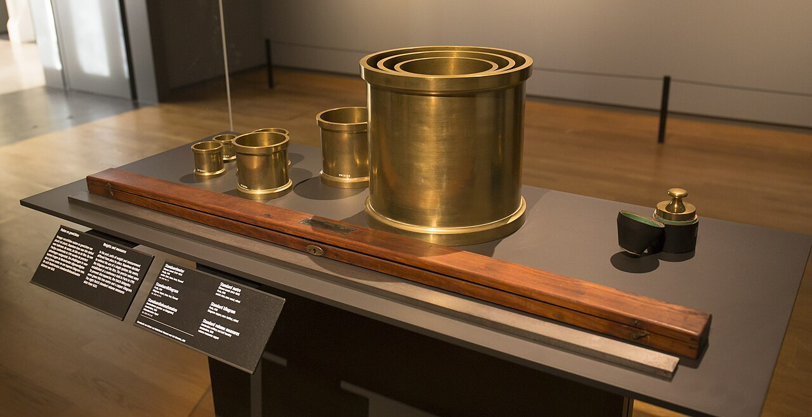
Il metro venne definito come la decimilionesima parte dell'arco di meridiano terrestre compreso tra il Polo Nord e l'Equatore, misurato lungo il meridiano passante per Parigi. Ma una definizione di questo tipo, per quanto elegante, aveva un limite pratico evidente: nessuno, nella vita di tutti i giorni, poteva rimisurare un quarto di meridiano terrestre per verificare il proprio metro. Serviva un oggetto concreto, conservato con cura, a cui chiunque potesse confrontare i propri strumenti.
Già nel 1793, mentre la triangolazione tra Dunkerque e Barcellona era ancora in corso, fu adottato un valore provvisorio del metro, calcolato sui dati disponibili fino ad allora. Solo nel 1799, completati i calcoli finali di Delambre e Méchain, venne realizzata in platino la barra ufficiale nota come metro campione, destinata a rappresentare concretamente la nuova unità. Il valore della barra rifletteva inevitabilmente anche gli errori presenti nella misura del meridiano: il metro materiale non era quindi una realizzazione perfetta della definizione geometrica, ma il risultato concreto di quella complessa impresa scientifica.
Quasi un secolo più tardi, nel 1889, un nuovo prototipo internazionale, realizzato in una lega di platino‑iridio scelta per la sua stabilità, divenne il riferimento ufficiale del metro. Conservato presso il Bureau International des Poids et Mesures (BIPM) a Sèvres, nei pressi di Parigi, esso serviva come riferimento per i campioni nazionali realizzati e adottati dai paesi aderenti alla Convenzione del Metro.
Il metro aveva così compiuto un passaggio fondamentale: da una definizione fondata sulla misura della Terra era diventato anche un riferimento materiale, conservato e condiviso dalla comunità scientifica internazionale. Ma quel campione, come la misura dalla quale era nato, portava con sé anche i limiti delle conoscenze e degli strumenti dell'epoca.
Capitolo 10
Il nuovo sistema di misura non si limitava a definire una nuova unità di lunghezza, ma cercava di collegare tra loro le diverse grandezze attraverso relazioni semplici e razionali. Il metro costituiva il punto di partenza: da esso si potevano ricavare il decimetro e, attraverso le dimensioni di un cubo di lato pari a un decimetro, l'unità di volume, il litro. A sua volta, il litro permetteva di stabilire un legame con la massa attraverso la densità dell'acqua. L'idea era quindi quella di collegare lunghezza, volume e massa all'interno di una stessa struttura coerente.
Ma una relazione teorica non era sufficiente: occorreva trasformarla in un riferimento concreto, che potesse essere conservato e utilizzato per confrontare le misure. La massa di un determinato volume d'acqua dipende infatti dalle condizioni nelle quali viene effettuata la misura, in particolare dalla temperatura e dalla purezza dell'acqua. Per disporre di un riferimento materiale stabile e facilmente confrontabile, nel 1799 venne quindi realizzato il Kilogramme des Archives, un cilindro di platino destinato a costituire il campione materiale dell'unità di massa.
Come era avvenuto per il metro, una definizione fondata su una grandezza naturale veniva trasformata in un campione materiale, conservato e custodito come riferimento ufficiale. Il chilogrammo mostrava così una caratteristica fondamentale della nuova metrologia: la natura poteva fornire il riferimento concettuale, ma la sua realizzazione pratica richiedeva ancora un oggetto costruito dall'uomo.
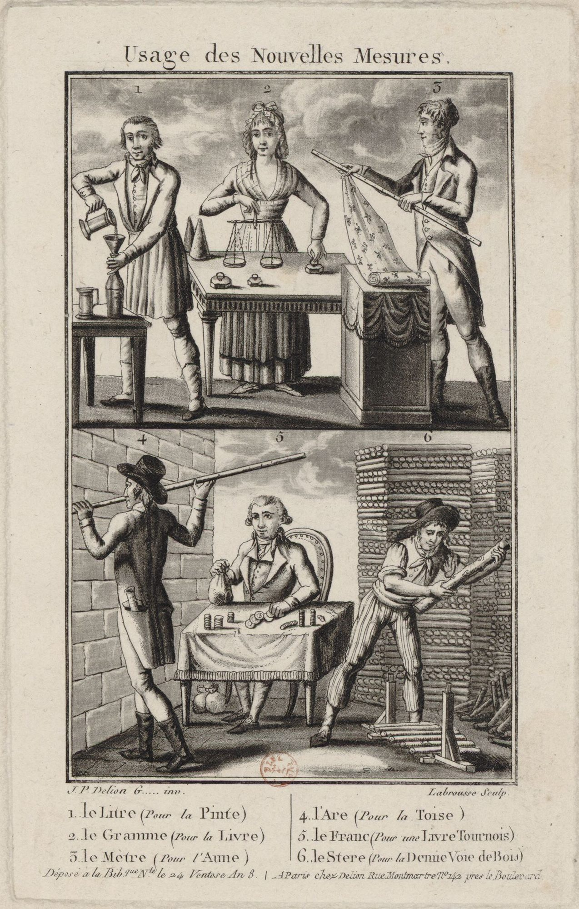
Capitolo 11
Il metro e il chilogrammo rappresentavano soltanto l'inizio. Con lo sviluppo della scienza e della tecnologia divenne necessario misurare in modo condiviso anche il tempo, la temperatura, la corrente elettrica, la quantità di sostanza e l'intensità luminosa. Il sistema delle unità si ampliò progressivamente, fino a comprendere le principali grandezze utilizzate dalla fisica.
Non tutte queste unità ebbero la stessa origine. Il metro aveva costituito il riferimento fondamentale per la lunghezza e, nel progetto originario del sistema metrico, era stato collegato anche alla definizione delle unità di volume e di massa. Altre grandezze seguirono invece percorsi differenti, legati allo sviluppo della fisica e delle sue applicazioni. Nel corso del tempo, queste diverse unità furono progressivamente ricondotte all'interno di un unico sistema internazionale.
Il Sistema Internazionale di Unità di Misura (SI) individua oggi sette unità fondamentali, associate ad altrettante grandezze fisiche. A partire da queste unità vengono definite tutte le altre unità di misura utilizzate nella scienza e nella tecnologia. Il termine "fondamentali" non significa però che queste grandezze siano più importanti delle altre, ma indica che costituiscono la base scelta dal Sistema Internazionale per esprimere tutte le altre unità. Le grandezze derivate, come velocità, area, volume, forza ed energia, per esempio, possono infatti essere espresse attraverso combinazioni delle unità fondamentali e pertanto con un numero limitato di riferimenti è possibile descrivere quantitativamente una parte enorme dei fenomeni fisici.
Ma anche questo alfabeto aveva bisogno di riferimenti materiali: campioni, strumenti e procedure attraverso i quali rendere concrete le unità. Il passo successivo della metrologia sarebbe stato ancora più radicale: cercare quei riferimenti non negli oggetti costruiti dall'uomo, ma nelle proprietà fondamentali della natura.
| Grandezza fisica | Unità | Simbolo |
|---|---|---|
| Lunghezza | metro | m |
| Massa | chilogrammo | kg |
| Tempo | secondo | s |
| Corrente elettrica | ampere | A |
| Temperatura termodinamica | kelvin | K |
| Quantità di sostanza | mole | mol |
| Intensità luminosa | candela | cd |
Capitolo 12
Anche il più accurato dei campioni materiali rimane pur sempre un oggetto fisico: può essere conservato, confrontato e protetto, ma può anche deteriorarsi, deformarsi o subire variazioni. Il problema divenne particolarmente evidente nel caso del metro.
Il prototipo internazionale conservato a Sèvres, realizzato in una lega di platino e iridio e adottato come riferimento internazionale nel 1889, rappresentò per decenni il fondamento della misura della lunghezza. La sua costruzione aveva costituito una straordinaria conquista: un singolo oggetto, custodito con estrema cura, permetteva alla comunità scientifica internazionale di disporre di un riferimento comune. Ma proprio la sua natura di oggetto materiale ne mostrava anche i limiti. Da un lato, lo sviluppo della scienza e dell'industria richiedeva misure sempre più precise; dall'altro, affidare la definizione del metro a un unico campione materiale significava rendere il sistema dipendente da un oggetto conservato in un luogo preciso, al quale tutti gli altri campioni dovevano essere ricondotti attraverso confronti.
Il problema non era quindi soltanto costruire una barra ancora più accurata. Occorreva cambiare il principio stesso sul quale si fondava la definizione dell'unità: il nuovo metro doveva essere non soltanto più preciso, ma anche riproducibile. Invece di affidare la definizione di una grandezza a un oggetto costruito dall'uomo, si cominciò così a cercare un riferimento nei fenomeni naturali: nel movimento della Terra, nelle proprietà della luce e nei fenomeni atomici, fino ad arrivare alle costanti fondamentali della fisica.
Capitolo 13
Nel 1889 il metro aveva ormai un riferimento materiale concreto. Il prototipo internazionale, realizzato in una lega di platino e iridio, era stato scelto come riferimento internazionale per la lunghezza e conservato presso il Bureau International des Poids et Mesures (BIPM) a Sèvres, vicino a Parigi. Da quel momento, la misura del metro poteva essere ricondotta a un campione materiale riconosciuto dalla comunità scientifica internazionale.
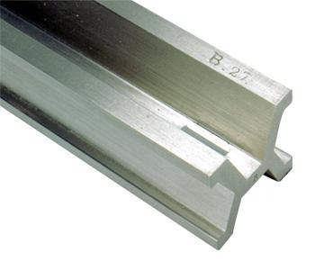
La soluzione sembrava ideale. Il campione era realizzato con un materiale particolarmente stabile, custodito in condizioni controllate e protetto con estrema cura. Attraverso confronti periodici, i campioni nazionali potevano essere messi in relazione con il prototipo internazionale, permettendo di mantenere una scala comune delle lunghezze.
Ma proprio questa soluzione conteneva una contraddizione. Perché il metro fosse davvero universale, era necessario che tutti potessero riferirsi allo stesso campione. Eppure quel campione era un oggetto unico, conservato in un luogo preciso, al quale gli altri campioni dovevano essere ricondotti attraverso confronti. La definizione universale della lunghezza dipendeva quindi, in ultima analisi, dalla conservazione di una particolare barra metallica.
Ma con il progresso della fisica sperimentale e delle tecniche di misura emerse una domanda nuova: era possibile definire il metro attraverso qualcosa di più stabile e riproducibile di un oggetto costruito dall'uomo?
Capitolo 14
La ricerca di un riferimento più stabile portò la metrologia a guardare ai fenomeni naturali. Se un oggetto costruito dall'uomo poteva deteriorarsi o non essere riprodotto perfettamente, un fenomeno fisico poteva invece essere osservato in condizioni controllate e riprodotto sperimentalmente in laboratori diversi. Le radiazioni elettromagnetiche offrivano proprio questa possibilità: le loro proprietà potevano essere studiate con strumenti sempre più precisi e potevano fornire un riferimento non legato a un particolare oggetto.
Nel 1960 la XI Conferenza Generale dei Pesi e delle Misure adottò una nuova definizione del metro basata sulla lunghezza d'onda di una specifica riga spettrale emessa dall'atomo di kripton-86. Il metro non era più identificato con la lunghezza di una barra conservata a Sèvres, ma con un numero preciso di lunghezze d'onda della radiazione scelta come riferimento.
La differenza rispetto al prototipo internazionale era profonda. Una barra poteva essere conservata in un luogo soltanto e poteva essere confrontata con altri campioni; una radiazione atomica, invece, poteva essere nuovamente ottenuta ogni volta che si ricreavano le condizioni sperimentali necessarie per la transizione e si disponeva degli strumenti adeguati per osservarla. Il riferimento della misura cominciava così a svincolarsi dall'oggetto che lo custodiva.
La nuova definizione rappresentava quindi un importante passo avanti: il metro non era più qualcosa che la comunità scientifica doveva possedere, ma qualcosa che poteva essere realizzato attraverso un fenomeno fisico. La misura diventava progressivamente indipendente da un luogo e da un manufatto particolare.
Il valore 1 650 763,73 non stabiliva una nuova lunghezza per il metro: indicava quante volte la lunghezza d'onda λ della radiazione di riferimento doveva essere contenuta nel metro, in modo da mantenere la continuità con la lunghezza dell'unità già definita dal prototipo internazionale. La nuova definizione cambiava quindi il modo di realizzare il metro, non la sua lunghezza: invece di riferirsi a una particolare barra metallica, la misura poteva essere ricondotta a una proprietà fisica riproducibile della radiazione del kripton-86.
Quando un atomo passa da uno stato energetico a un altro, può emettere una radiazione elettromagnetica con una frequenza e una lunghezza d'onda ben definite. Le proprietà di questa radiazione possono essere nuovamente osservate ogni volta che si ricreano le condizioni necessarie per la transizione.
Nel 1960 questa proprietà fu utilizzata per definire il metro attraverso una specifica transizione atomica del kripton-86. Il metro venne definito come una lunghezza pari a 1 650 763,73 lunghezze d'onda di quella radiazione nel vuoto, permettendo così di sostituire il prototipo materiale con un riferimento naturale e riproducibile.
Capitolo 15
Con il passare degli anni anche questa soluzione mostrò i suoi limiti. La realizzazione pratica del riferimento basato sulla radiazione del kripton‑86 dipendeva dalle caratteristiche della sorgente e dalle condizioni sperimentali. Nel frattempo, lo sviluppo degli orologi atomici e delle tecnologie elettroniche permetteva di determinare le frequenze con una precisione sempre maggiore. Diventava così possibile fare un passo ulteriore e fondare la definizione del metro su una proprietà ancora più universale: la velocità della luce nel vuoto.
Il percorso iniziato con la barra di platino‑iridio aveva raggiunto un punto di svolta. Il metro non era più legato a un oggetto da custodire e non era più definito attraverso una particolare radiazione di riferimento: diventava una definizione fondata su una costante fondamentale della fisica. Nel 1983 la XVII Conferenza Generale dei Pesi e delle Misure definì il metro fissando esattamente 299 792 458 metri al secondo il valore della velocità della luce nel vuoto.
La novità era profonda. Nelle definizioni precedenti si partiva da un riferimento fisico — prima una barra, poi una particolare radiazione — e si utilizzava quel riferimento per realizzare l'unità. Dal 1983 il procedimento concettuale si rovesciava: non era più necessario trovare o costruire un campione della lunghezza. Si fissava invece esattamente il valore di una costante fondamentale della natura e, attraverso la definizione del secondo, da essa si ricavava il metro.
La misura della lunghezza diventava così indipendente da un particolare oggetto o da una particolare sorgente luminosa. La velocità della luce nel vuoto non doveva essere conservata, trasportata o confrontata con un campione: era una proprietà della natura alla quale la definizione del metro poteva fare riferimento ovunque.
In pratica, una volta realizzato il secondo, la definizione permette di realizzare il metro attraverso la propagazione della luce: stabilendo un intervallo di tempo e conoscendo esattamente c, è possibile determinare la distanza percorsa dalla luce senza confrontarla con alcun campione materiale.
Il valore della velocità della luce nel vuoto è fissato esattamente a
Il metro è quindi definito come la distanza percorsa dalla luce nel vuoto durante un intervallo di tempo pari a
La definizione del metro non richiede più un campione materiale della lunghezza: una volta realizzato il secondo, la relazione tra tempo e velocità della luce permette di realizzare il metro.
Capitolo 16
La trasformazione compiuta con il metro non rimase un caso isolato. Nel corso del Novecento, il progresso della fisica sperimentale rese possibile individuare riferimenti naturali sempre più stabili e riproducibili anche per le altre grandezze fondamentali. Il problema della metrologia non era più soltanto quello di costruire campioni migliori, ma quello di definire le unità in modo da non dipendere da particolari oggetti, luoghi o condizioni sperimentali.
Il passaggio decisivo avvenne nel 2019, quando entrò in vigore la nuova formulazione del Sistema Internazionale di Unità di Misura. Le sette unità fondamentali continuarono a costituire la base del Sistema Internazionale, ma la loro definizione venne ricondotta a valori numerici fissati esattamente di sette costanti fondamentali della natura.
La scelta delle costanti non fu casuale. La velocità della luce nel vuoto entra nella definizione del metro; la frequenza della transizione iperfine del cesio‑133 in quella del secondo; la costante di Planck in quella del chilogrammo; la carica elementare in quella dell'ampere; la costante di Boltzmann in quella del kelvin; la costante di Avogadro in quella della mole; l'efficacia luminosa di una radiazione monocromatica di frequenza fissata in quella della candela.
Il significato di questa trasformazione è profondo. Le unità non sono più rappresentate da oggetti che devono essere conservati e protetti, né dipendono dalla disponibilità di un particolare campione materiale. La loro definizione è incorporata nella struttura del Sistema Internazionale e collegata a proprietà fondamentali della natura. Le realizzazioni pratiche possono cambiare con il progresso della tecnologia, mentre la definizione dell'unità rimane invariata.
Nel Sistema Internazionale (SI), le sette unità di base sono definite attraverso valori numerici fissati esattamente di sette costanti della natura. Le loro realizzazioni pratiche possono essere ottenute attraverso esperimenti e strumenti diversi, ma la definizione delle unità rimane invariata.
Queste sette definizioni costituiscono la base del Sistema Internazionale. Le unità derivate del SI possono essere espresse in funzione delle sette unità di base attraverso relazioni matematiche. Il SI moderno non richiede quindi un insieme di campioni materiali indipendenti: le unità sono definite attraverso costanti con valori numerici fissati esattamente e possono essere realizzate attraverso procedimenti sperimentali sempre più precisi.
Capitolo 17
In senso scientifico, misurare significa confrontare una grandezza con un riferimento della stessa natura, scelto per esprimerne quantitativamente il valore. Il risultato di questo confronto è espresso mediante un numero accompagnato dalla relativa unità di misura. Un numero, infatti, non possiede alcun significato fisico se non è associato all'unità che ne specifica il valore.
Ogni misura è, prima di tutto, un atto di comunicazione. Perché una misura sia utile, infatti, non basta ottenere un numero: è necessario che chi la utilizza possa comprenderne il significato nello stesso modo. Da questa semplice esigenza si è sviluppata la lunga storia delle unità di misura.
Dalle antiche misure basate sul corpo umano fino alle moderne definizioni fondate sulle costanti fondamentali della fisica, la storia delle unità di misura è la storia della continua ricerca di un linguaggio universale. Un linguaggio che oggi permette a laboratori, industrie e agenzie spaziali di tutto il mondo di collaborare utilizzando gli stessi riferimenti.
Immaginiamo di leggere semplicemente 25. Che cosa rappresenta questo numero? Venticinque metri? Venticinque chilogrammi? Venticinque secondi? Senza un'unità di misura, il numero non ci dice quale grandezza fisica stiamo considerando. È l'unità che permette di interpretare il valore numerico e di renderlo comprensibile e confrontabile.
La possibilità di esprimere una misura in modo univoco costituisce il fondamento di ogni attività scientifica e tecnologica. Quando due persone effettuano la stessa misura, oppure quando laboratori situati in parti diverse del mondo confrontano i risultati dei propri esperimenti, devono poter essere certi che i numeri utilizzati abbiano lo stesso significato e siano riferiti agli stessi standard.
Le unità di misura diventano così un vero e proprio linguaggio universale: un sistema condiviso che permette di confrontare osservazioni, riprodurre esperimenti e coordinare attività scientifiche e tecnologiche anche a grande distanza.
Ma un linguaggio comune funziona soltanto se le sue regole vengono utilizzate nello stesso modo. Un numero può essere corretto e, allo stesso tempo, essere interpretato erroneamente se chi lo riceve attribuisce alla misura un significato diverso da quello previsto da chi l'ha prodotta.
La storia della misura non riguarda quindi soltanto la ricerca di unità sempre più precise e universali. Riguarda anche la necessità di trasmettere correttamente le informazioni che quelle unità permettono di esprimere.
Il Mars Climate Orbiter, una sonda progettata per studiare l'atmosfera e il clima di Marte, fu lanciato l'11 dicembre 1998. Dopo un viaggio verso Marte durato circa nove mesi e mezzo, la sonda iniziò le manovre per inserirsi nell'orbita marziana. Pochi minuti prima del previsto inserimento orbitale, tuttavia, ogni contatto con il veicolo spaziale venne definitivamente perso. La commissione d'inchiesta stabilì che la causa fondamentale della perdita della sonda era legata a un'incompatibilità nell'utilizzo delle unità di misura. Il software sviluppato dalla società Lockheed Martin forniva infatti alcuni dati relativi ai propulsori utilizzando unità del sistema anglosassone, mentre il software utilizzato dal team di navigazione della NASA interpretava quegli stessi dati come se fossero espressi nelle unità del Sistema Internazionale. La conseguenza fu un errore nella determinazione della traiettoria. Il Mars Climate Orbiter passò molto più vicino alla superficie marziana di quanto previsto e la missione si concluse con la perdita del veicolo spaziale, costato circa 125 milioni di dollari. Non era quindi necessario che qualcuno sbagliasse una misura. Bastava che due sistemi attribuissero un significato diverso allo stesso numero.
La storia delle unità di misura racconta anche una parte della storia della scienza. Misurare non significa soltanto attribuire un numero a una grandezza: significa stabilire un riferimento comune, definire come possa essere riprodotto e garantire che quel riferimento rimanga valido per tutti. La metrologia moderna porta questa idea alle sue estreme conseguenze: le unità sono convenzioni condivise dalla comunità internazionale, ma le loro definizioni si fondano oggi su proprietà fondamentali della natura.
Dal corpo umano al campione materiale, dal campione materiale ai fenomeni naturali, dai fenomeni naturali alle costanti fondamentali della natura.
Ad ogni passaggio il riferimento diventa meno locale, meno dipendente da particolari oggetti o condizioni e più universale. L'uomo, partito da se stesso, è arrivato a definire le proprie unità attraverso proprietà della natura che non dipendono da un particolare luogo, da un particolare oggetto o da una particolare persona. Questa evoluzione rappresenta una delle grandi conquiste della metrologia: le unità di misura possono oggi essere realizzate attraverso riferimenti sempre più stabili, universali e riproducibili.